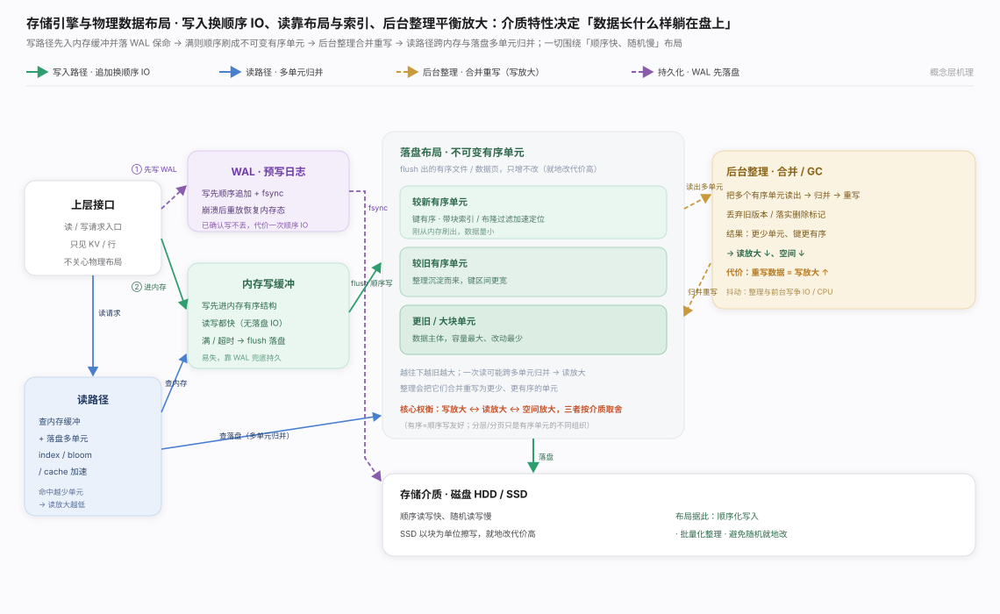
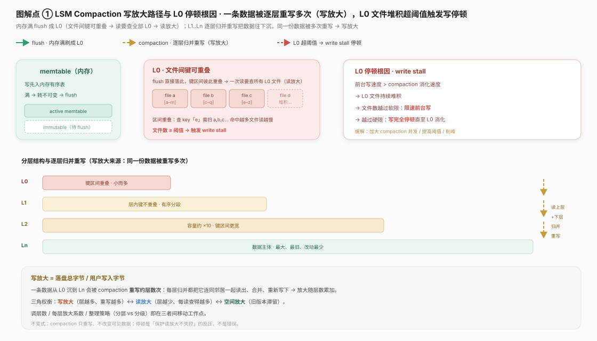
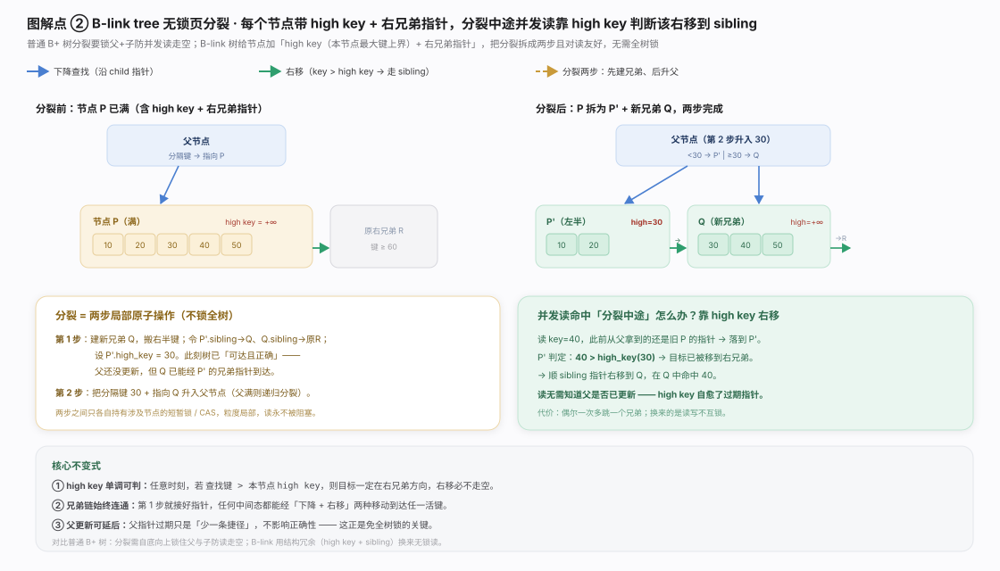
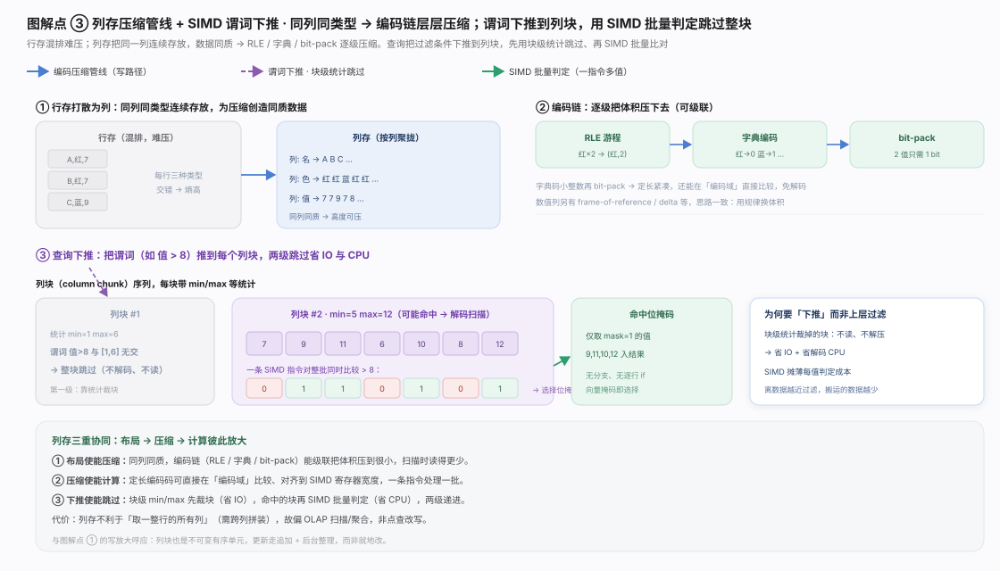
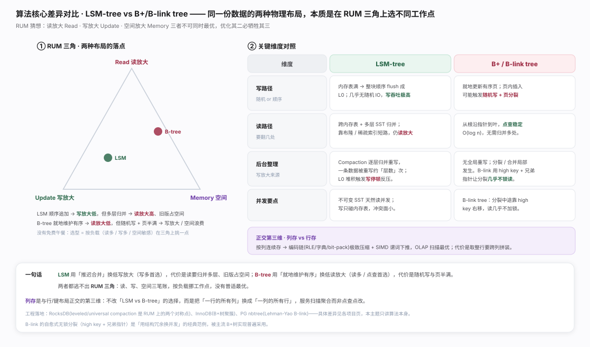
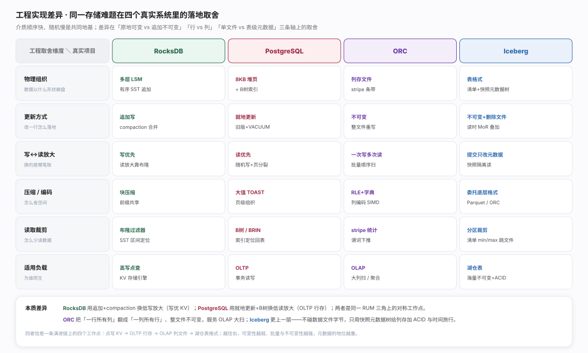

存储引擎回答一个物理问题：数据以什么形状躺在磁盘／SSD 上,才能写得快、读得动、又不撑爆空间。地基是介质特性（顺序快、随机慢、SSD 块擦写就地改贵),故普遍收敛到「写入内存缓冲 + WAL → 满则顺序刷成不可变有序单元 → 后台合并重写 → 读跨内存与落盘单元归并」。三种核心机制各解一面。分工见生态图。

LSM（写优先极端）：写只进内存有序表、满则整块顺序刷成 L0,写吞吐极高。代价两笔——读放大（L0 键区间可重叠,靠 compaction 归并重写下沉)、写放大（数据逐层重写约「层数」次）。L0 停顿是反压闸门：前台写速持续超 compaction 消化即限速停写,防读放大失控。见图。

B-link tree（读优先、点查稳定）：化解 B+ 树页分裂并发死穴。每节点加 high key（键上界）+ 指向右兄弟的指针,分裂拆成局部原子步——先建兄弟搬右半键接链设 high key（此刻树已可达且正确,哪怕父指针未更新),再把分隔键升入父。并发读见 查找键 > high key 即顺兄弟右移命中,high key 自愈过期父指针——读与分裂互不上锁。见图。

列存：把同一列的值连续存放,解锁压缩与计算两条增益。压缩——同列同质,RLE／字典编码／bit-pack／delta 层层级联,扫描搬的字节更少;计算——定长编码可在编码域直比、对齐 SIMD,谓词下推做两级跳过（列块 min/max 整块跳 + SIMD 批量比较出位掩码）。代价是不擅长取整行,故服务 OLAP 扫描聚合而非点查点改。见图。

LSM 与 B-tree 是同一份数据的两种物理布局,本质是在 RUM 三角（读放大／写放大／空间放大不可兼得）上选不同工作点：LSM 用「推迟合并」换低写放大（写多首选);B-tree 用「就地维护有序」换低读放大（读多／点查首选)。列存是正交的第三维——把「一行的所有列」换成「一列的所有行」服务扫描聚合。一句话总纲：无普适最优,只有对负载的适配。见图。

四个真实系统的差异恰好落在 RUM 三角的四个工作点上。RocksDB 走 LSM——写只追加、后台 compaction,以写放大换极低写延迟,高写入点查 KV 底盘。PostgreSQL 走 8KB 堆页 + B 树索引 + 就地更新（旧版本 MVCC 保留、VACUUM 回收),读放大低、点查稳定,服务 OLTP。ORC 是列存文件（RLE／字典编码 + stripe 级统计与谓词下推,整文件不可变),专供 OLAP 大扫。Iceberg 只用「快照 + 清单」元数据树给底层列存文件叠加 ACID／时间旅行／分区裁剪,行级删除靠独立 delete file 做 merge-on-read。分水岭：介质顺序快随机慢是共同地基,取舍全在负载读写比与可变性——越偏点写越保留原地可变（RocksDB／PostgreSQL),越偏海量批量分析越走向不可变、元数据越重（ORC／Iceberg）。
关键实现细节均取自库内已源码核实的项目页与下列权威规范 / 论文：The RUM Conjecture（EDBT 2016） · RocksDB Compaction（官方 Wiki） · Apache ORC 文件规范 · Apache Iceberg 表规范
关键实现细节均取自库内已源码核实的项目页与下列权威规范 / 论文：The RUM Conjecture（EDBT 2016） · RocksDB Compaction（官方 Wiki） · Apache ORC 文件规范 · Apache Iceberg 表规范
The Log-Structured Merge-Tree（O'Neil 等，1996）
Designing Access Methods: The RUM Conjecture（Athanassoulis 等，EDBT 2016）
Efficient Locking for Concurrent Operations on B-Trees（Lehman & Yao，ACM TODS 1981）
C-Store: A Column-oriented DBMS（Stonebraker 等，VLDB 2005）
MonetDB/X100: Hyper-Pipelining Query Execution（Boncz 等，CIDR 2005）